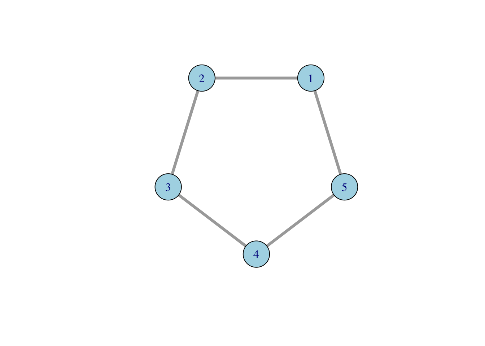
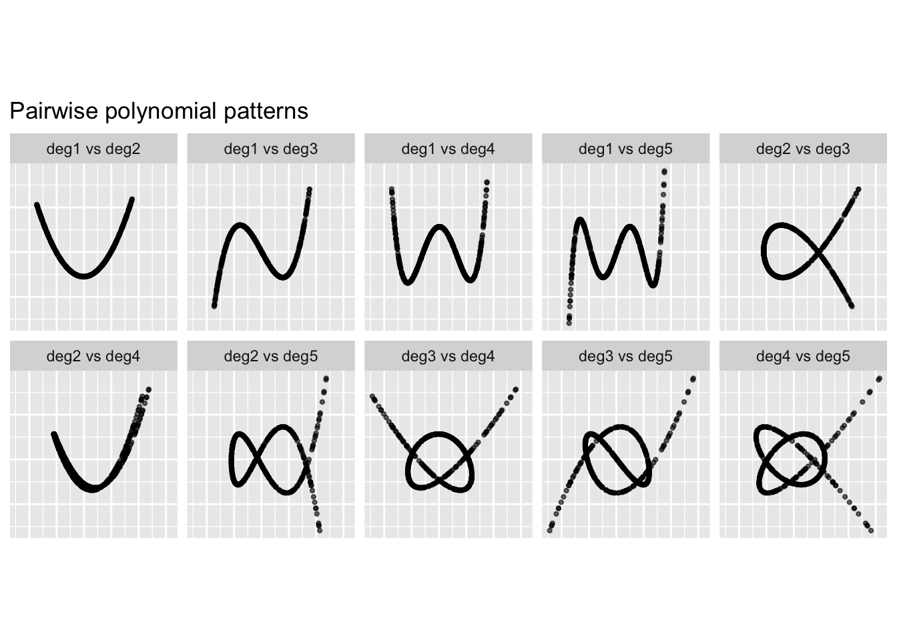
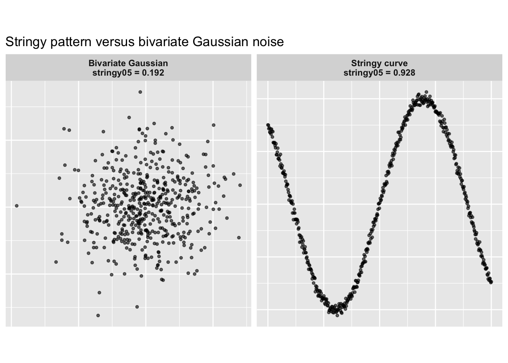

Code
g <- igraph::make_ring(5)
plot(
g,
vertex.size = 30,
vertex.label = 1:5,
vertex.color = "lightblue",
edge.width = 4
)
While exploring and doing simulations for scale analysis, especially while exploring the 95th percentile of noise for the stringy05 index, I came across cases where the index went beyond 1. The exceedance was small, for example around 1.005, but it was still larger than 1. Since scagnostic indices are defined to be between 0 and 1, this made me suspicious about whether the stringy05 definition had been implemented correctly.
In this blog post, I discuss the stringy05 index in the cassowaryr package, which is used for shape analysis and for capturing stringy-like patterns in two-dimensional data. I explain how I started debugging this index, how I corrected the definition, and how I tested whether the modified version stays within the expected range and behaves properly after the modification.
stringy05 DefinitionIn this section, I investigate an issue I observed in the current stringy05 implementation in cassowaryr, where values occasionally exceed 1, for example 1.005, for highly string-like shapes. Since this measure should be bounded above by 1, I examine the definition more closely to identify and fix the source of the discrepancy.
The current implementation of the stringy05 measure is:
diameter <- igraph::get_diameter(x)
length(diameter) / (length(x) - 1)This aims to compute:
the length of the longest shortest path through the MST divided by the total length of the MST.
However, both the numerator and denominator in the current implementation are problematic.

g <- igraph::make_ring(5)
plot(
g,
vertex.size = 30,
vertex.label = 1:5,
vertex.color = "lightblue",
edge.width = 4
)
length(diameter)diameter <- igraph::get_diameter(g)
diameter
length(diameter)diameter <- igraph::get_diameter(g)
diameter+ 3/5 vertices, from 23f64c7:
[1] 1 2 3length(diameter)[1] 3igraph::get_diameter() returns a sequence of vertices, not a numeric distance. Therefore, length(diameter) counts the number of vertices on the diameter path. It does not return the length of the path in terms of edge weights.
This is important because in the scagnostics setting, the MST edges are weighted by Euclidean distances. Therefore, the numerator should be the weighted length of the longest shortest path through the MST, not the number of vertices on that path.
A more appropriate approach is to use:
igraph::diameter(g)This returns the length of the longest shortest path. When the graph has edge weights, the weighted diameter should be used.
length(x) - 1length(x) - 1length(x) for an igraph object does not represent total edge length.n - 1 gives only the number of edges, not their lengths.This ignores the fact that in scagnostics:
The correct implementation of stringy05 should follow:
(length of longest shortest path) / (total MST edge length)
w <- igraph::E(x)$weight
total_length <- sum(w)
diameter_length <- igraph::diameter(x)
diameter_length / total_lengthsc_stringy05_old <- function(x, y) {
sc <- cassowaryr::scree(x, y)
mst <- cassowaryr:::gen_mst(sc$del, sc$weights)
diameter <- igraph::get_diameter(mst)
length(diameter) / (length(mst) - 1)
}
sc_stringy05_modified <- function(x, y) {
sc <- cassowaryr::scree(x, y)
mst <- cassowaryr:::gen_mst(sc$del, sc$weights)
d <- igraph::diameter(
mst,
weights = igraph::E(mst)$weight
)
L <- sum(igraph::E(mst)$weight)
d / L
}
data <- spinebil::data_gen(type = "polynomial", degree = 2)
# Cassowaryr version before modification
old_value <- sc_stringy05_old(data[, 1], data[, 2])
# Modified version
new_value <- sc_stringy05_modified(data[, 1], data[, 2])
c(
old = old_value,
modified = new_value
) old modified
1.007937 1.000000 The old implementation can occasionally produce values above 1 because the numerator and denominator are not measuring the same type of quantity. The numerator is based on the number of vertices on the diameter path, while the denominator is not the total weighted MST length.
After modification, both the numerator and denominator are based on MST edge weights. This makes the ratio interpretable and keeps it consistent with the intended definition.
In network analysis, the Pi index is commonly defined as the ratio between the total length of a network and the distance of the network diameter.

where \(L(G)\) is the total length of the graph and \(D(d)\) is the distance of the graph diameter.
The stringy05 measure is closely related to this idea, but it uses the inverse ratio. In the stringy05 definition, the diameter means the distance of the longest shortest path through the MST. It is the sum of the edge weights along the longest path in the MST.
This ratio should always be less than or equal to 1 because the diameter path is part of the MST, and the total MST length includes all edges in the MST. Therefore, the longest path through the tree cannot have a larger total length than the whole tree.
My modified stringy function was:
sc_stringy05_modified <- function(x, y) {
sc <- cassowaryr::scree(x, y)
mst <- cassowaryr:::gen_mst(sc$del, sc$weights)
d <- igraph::diameter(mst)
L <- sum(igraph::E(mst)$weight)
d / L
}To check whether igraph::diameter(mst) gives the weighted diameter, I compared two versions:
diameter(mst), where I do not explicitly pass weights.diameter(mst, weights = E(mst)$weight), where I explicitly pass the MST edge weights.all.equal(d_default, d_weighted)x <- c(0, 1, 2, 3, 4, 2)
y <- c(0, 0.1, -0.1, 0.05, 0, 1)
sc <- cassowaryr::scree(x, y)
mst <- cassowaryr:::gen_mst(sc$del, sc$weights)
d_default <- igraph::diameter(mst)
d_weighted <- igraph::diameter(
mst,
weights = igraph::E(mst)$weight
)
all.equal(d_default, d_weighted)[1] TRUESince the two values are equal, this confirms that diameter(mst) is already using the MST edge weights by default in this case.
all.equal(stringy_default, stringy_weighted)L <- sum(igraph::E(mst)$weight)
stringy_default <- d_default / L
stringy_weighted <- d_weighted / L
all.equal(stringy_default, stringy_weighted)[1] TRUEBecause these are also equal, the modified stringy function is consistent. The numerator uses the weighted diameter of the MST, and the denominator uses the total MST length, calculated by summing the MST edge weights.
stringy05 IndexAfter correcting the definition, the next step is to test whether the modified index behaves as expected. I want to check three main properties:
To test this, I use polynomial data generated from the spinebil package. Polynomial patterns are useful here because they create smooth, structured relationships. Some pairwise combinations of polynomial degrees produce strong string-like shapes, which makes them good test cases for the modified stringy index.
First, I generate polynomial data with degree 5:
library(spinebil)
library(tidyverse)
set.seed(545)
poly_data <- spinebil::data_gen(
type = "polynomial",
degree = 5
)
poly_data <- as.data.frame(poly_data)
names(poly_data) <- paste0("deg", seq_len(ncol(poly_data)))This gives five polynomial variables. I then examine all non-equal pairwise combinations, such as degree 1 versus degree 2, degree 1 versus degree 3, and so on.
pair_data <- combn(names(poly_data), 2, simplify = FALSE) |>
purrr::map_dfr(function(pair) {
tibble(
var_pair = paste(pair, collapse = " vs "),
x = poly_data[[pair[1]]],
y = poly_data[[pair[2]]]
)
})
ggplot(pair_data, aes(x = x, y = y)) +
geom_point(alpha = 0.6, size = 0.8) +
facet_wrap(~ var_pair, nrow = 2) +
labs(
title = "Pairwise polynomial patterns",
x = NULL,
y = NULL
) +
theme(aspect.ratio = 1,
axis.text = element_blank(),
axis.ticks = element_blank())
These plots show the different two-dimensional shapes generated by the polynomial basis. Some combinations form very clear string-like structures, while others have more curved or folded shapes.
I then use spinebil::ppi_scale() to evaluate the modified stringy05 index over 100 repetitions.
res <- spinebil::ppi_scale(
spinebil::data_gen("polynomial", degree = 5),
sc_stringy05_modified,
n_sim = 100
)This gives repeated values of the modified stringy index across different variable pairs and simulation settings.
res <- spinebil::ppi_scale(poly_data,
sc_stringy05_modified,
n_sim = 100
)
head(res)# A tibble: 6 × 6
simulation var_i var_j var_pair sigma index
<int> <chr> <chr> <chr> <chr> <dbl>
1 1 deg1 deg2 deg1-deg2 structure 1.00
2 1 deg1 deg2 deg1-deg2 noise 0.202
3 1 deg1 deg3 deg1-deg3 structure 1.00
4 1 deg1 deg3 deg1-deg3 noise 0.219
5 1 deg1 deg4 deg1-deg4 structure 1
6 1 deg1 deg4 deg1-deg4 noise 0.177The most important test is whether the modified index stays inside the expected interval \([0, 1]\). Because very small floating-point errors can sometimes occur in numerical calculations, I check the bound using a tiny tolerance:
tol <- 1e-12
res |>
filter(index > 1 + tol) |>
arrange(desc(index))tol <- 1e-12
res |>
filter(index > 1 + tol) |>
arrange(desc(index))# A tibble: 0 × 6
# ℹ 6 variables: simulation <int>, var_i <chr>, var_j <chr>, var_pair <chr>,
# sigma <chr>, index <dbl>bounds_check <- res |>
summarise(
min_index = min(index, na.rm = TRUE),
max_index = max(index, na.rm = TRUE),
any_below_0 = any(index < 0, na.rm = TRUE),
any_above_1 = any(index > 1 + tol, na.rm = TRUE),
n_below_0 = sum(index < 0, na.rm = TRUE),
n_above_1 = sum(index > 1 + tol, na.rm = TRUE)
)
bounds_checkbounds_check <- res |>
summarise(
min_index = min(index, na.rm = TRUE),
max_index = max(index, na.rm = TRUE),
any_below_0 = any(index < 0, na.rm = TRUE),
any_above_1 = any(index > 1 + tol, na.rm = TRUE),
n_below_0 = sum(index < 0, na.rm = TRUE),
n_above_1 = sum(index > 1 + tol, na.rm = TRUE)
)
bounds_check# A tibble: 1 × 6
min_index max_index any_below_0 any_above_1 n_below_0 n_above_1
<dbl> <dbl> <lgl> <lgl> <int> <int>
1 0.148 1.00 FALSE FALSE 0 0This confirms that the modified implementation respects the theoretical upper bound.
ggplot(res, aes(x = var_pair, y = index)) +
geom_boxplot(outlier.alpha = 0.5) +
coord_flip() +
theme_minimal(base_size = 12) +
labs(
title = "Modified stringy05 index on polynomial data",
subtitle = "100 repetitions",
x = "Polynomial variable pair",
y = "Modified stringy05 index"
)
This plot is useful because it shows not only the average behaviour of the index, but also the spread across repeated simulations.
For strongly stringy polynomial patterns, the modified index frequently gives values close to 1, not exceeding 1.
To check whether the stringy index behaves intuitively, I compare two simple examples. The first dataset is a curve-like pattern with only a small amount of Gaussian noise added. This should have a high stringy value. The second dataset is bivariate Gaussian noise, which does not contain a string-like structure and should therefore have a lower stringy value.
set.seed(1057)
n <- 500
# Stringy curve-like pattern
stringy_data <- tibble(
x = seq(-2, 2, length.out = n),
y = sin(2 * x) + rnorm(n, mean = 0, sd = 0.03),
pattern = "Stringy curve"
)
# Non-stringy bivariate Gaussian noise
gaussian_data <- tibble(
x = rnorm(n),
y = rnorm(n),
pattern = "Bivariate Gaussian"
)
example_data <- bind_rows(
stringy_data,
gaussian_data
)Now I calculate the stringy index for each dataset.
stringy_values <- example_data |>
group_by(pattern) |>
summarise(
stringy_value = cassowaryr::sc_stringy05(
x,
y
),
.groups = "drop"
)
knitr::kable(stringy_values)| pattern | stringy_value |
|---|---|
| Bivariate Gaussian | 0.1922118 |
| Stringy curve | 0.9281513 |
plot_data <- example_data |>
left_join(stringy_values, by = "pattern") |>
mutate(
label = paste0(
pattern,
"\nstringy05 = ",
round(stringy_value, 3)
)
)
ggplot(plot_data, aes(x = x, y = y)) +
geom_point(alpha = 0.6, size = 1) +
facet_wrap(~ label, nrow = 1, scales = "free") +
theme(
aspect.ratio = 1,
strip.text = element_text(face = "bold"),
axis.ticks = element_blank(),
axis.text = element_blank()
) +
labs(
title = "Stringy pattern versus bivariate Gaussian noise",
x = NULL,
y = NULL
)
The original implementation of stringy05 occasionally produced values slightly larger than 1 because the numerator and denominator were not both based on weighted MST lengths. The numerator used the number of vertices returned by get_diameter(), while the denominator did not represent the total weighted length of the MST.
The corrected implementation computes:
\[ \text{stringy05} = \frac{\text{weighted MST diameter}} {\text{total weighted MST length}}. \]
This version is consistent with the intended definition. In the simulations, the modified index stays within the expected \([0, 1]\) range, gives values close to 1 for strong string-like polynomial patterns. This gives empirical support that the corrected stringy05 index is properly scaled and better aligned with the scagnostics definition.